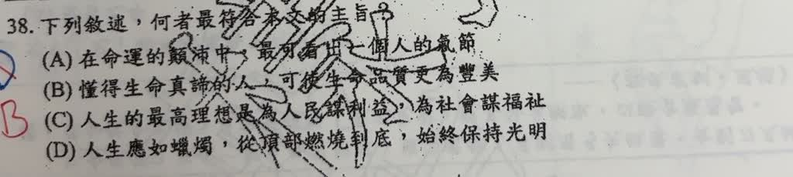
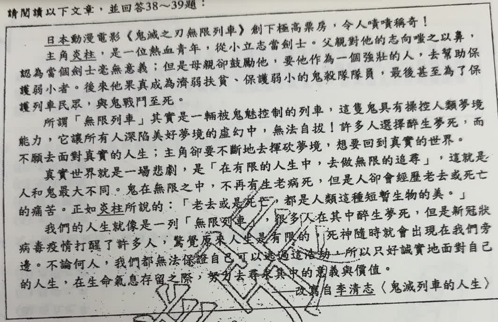
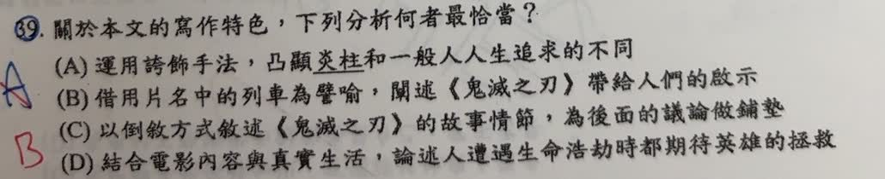

完整原題
作答所需文章／材料
日本動漫電影《鬼滅之刃無限列車》創下極高票房，令人嘖嘖稱奇！ 主角炎柱，是一位熱血青年，從小立志當劍士。父親對他的志向嗤之以鼻，認為當個劍士毫無意義；但是母親卻鼓勵他，要他作為一個強壯的人，去幫助保護弱小者。後來他果真成為濟弱扶貧、保護弱小的鬼殺隊隊員，最後甚至為了保護列車民眾，與鬼戰鬥至死。 所謂「無限列車」其實是一輛被鬼魅控制的列車，這隻鬼具有操控人類夢境能力，它讓所有人深陷美好夢境的虛幻中，無法自拔！許多人選擇醉生夢死，而不願去面對真實的人生，主角卻要不斷地去摧破夢境，想要回到真實的世界。 真實世界就是一場悲劇，是「在有限的人生中，去做無限的追尋」，這就是人和鬼最大不同。鬼在無限之中，不再有生老病死，但是人卻會經歷老去或死亡的痛苦。正如炎柱所說的：「老去或是死亡，都是人類這種短暫生物的美。」 我們的人生就像是一列「無限列車」，很多人在其中醉生夢死，但是新冠狀病毒疫情打醒了許多人，驚覺原來人生是有限的，死神隨時就會出現在我們旁邊。不論何人，我們都無法保證自己可以逃過這浩劫，所以只好誠實地面對自己的人生，在生命氣息存留之際，努力去尋找其中的意義與價值。 ——改寫自李清志〈鬼滅列車的人生〉國文第38題｜有限生命的意義與價值
國文第39題｜無限列車譬喻人生
先想一想，再查看答案、解說與原圖
國文第38題｜有限生命的意義與價值
分享原卷｜第 38 題 · 首次出題日期 2026-09-03 · 原AI對話 ↗
逐項解析
| 選項與原句 | 判讀 | 句意與判斷理由 |
|---|---|---|
| (A) 在命運的顛沛中，最可看出一個人的氣節 | 不選 | 本文重點是有限生命的意義，不是專論困境下的氣節。 |
| (B) 懂得生命真諦的人，可使生命品質更為豐美 | 應選 | 最能概括面對生命有限、積極尋找意義與價值的主旨。 |
| (C) 人生的最高理想是為人民謀利益，為社會謀福祉 | 不選 | 偏向奉獻社會的特定目標，未涵蓋全文對有限生命的反思。 |
| (D) 人生應如蠟燭，從頂部燃燒到底，始終保持光明 | 不選 | 強調奉獻到底，雖有正面意涵，仍偏離本文有限與無限、夢境與現實的主要對照。 |
詳細說明與解題步驟
文章先談電影角色與夢境，再對照人的生命有限，最後收在誠實面對人生、尋找「意義與價值」。B最能概括這個方向。
A的氣節、C的全民福祉、D的奉獻到底都可以是好價值，但不是文章最主要的論證。主旨題不能只選聽起來最勵志的句子，應將前面的例子與最後的結論一起對照。
原AI把結尾讀成勇毅與價值，也誤讀A、B的句子；原卷結尾實為「意義與價值」，B是「可使生命品質更為豐美」。這裡依較清楚近照並對照遠照完整轉錄，答案仍為B。
本文以電影與疫情為寫作材料，分析的是作者在文中的生命觀，不把片中設定當現實世界的生死機制，也不把先看結尾誤教成任何主旨題都只需看一句。
① 電影情節是引子，不是主旨終點
文章先介紹電影、夢境與真實的對照，再談人的生命有限。選主旨時要追蹤這條思路，不能停在主角保護他人或戰鬥的情節。
② 面對有限，尋找意義與價值
作者最後強調誠實面對人生，趁生命存留尋找意義與價值。B以生命真諦與生命品質豐美概括這個方向；圖中的共同創作只是可能的生活例子。
③ 好價值很多，仍要能概括全文
A談困境中的氣節，C談社會福祉，D談奉獻到底，都是較特定的方向。B最能連起前文對照與結尾反思；要用全文驗證，不是任何主旨題都只看最後一句。
④ 從全文的對照，讀出生命的意義與價值
答案 B：懂生命真諦，使生命品質豐美
- 文章由電影、夢境轉向有限人生。
- 核心收在尋找意義與價值。
- 讓選項涵蓋全文，不只挑勵志句。
核對註記：已核對題幹、全部選項與必要材料；教材對應課次未確認，歸綜合。
原圖（僅本題）


國文第39題｜無限列車譬喻人生
分享原卷｜第 39 題 · 首次出題日期 2026-09-03 · 原AI對話 ↗
逐項解析
| 選項與原句 | 判讀 | 句意與判斷理由 |
|---|---|---|
| (A) 運用誇飾手法，凸顯炎柱和一般人人生追求的不同 | 不選 | 原文沒有靠誇大程度凸顯這種對比，核心寫法是把列車與人生連結。 |
| (B) 借用片名中的列車為譬喻，闡述《鬼滅之刃》帶給人們的啟示 | 應選 | 原文明寫人生就像一列無限列車，以列車比喻人沉迷夢境或面對有限生命的處境。 |
| (C) 以倒敘方式敘述《鬼滅之刃》的故事情節，為後面的議論做鋪墊 | 不選 | 原文依序介紹角色、列車與夢境，再議論人生，沒有先寫結局再回敘過程的明確安排。 |
| (D) 結合電影內容與真實生活，論述人遭遇生命浩劫時都期待英雄的拯救 | 不選 | 確有結合電影與現實，但結論是自己誠實面對人生，不是都等待英雄來救。 |
詳細說明與解題步驟
直接找手法的證據：「我們的人生就像是一列『無限列車』」。作者將人生與列車相連，藉電影意象說明人可能沉迷夢境，卻應覺察生命有限、尋求意義，故B正確。
D前半提到電影與真實生活，確實符合文章；但後半把結論改成等待英雄拯救，與末段要求誠實面對自己的人生不同，整項仍不正確。
判斷譬喻不能只機械地看有沒有像字；還須確認本體與喻體及相似關係。本題本體為人生，喻體為無限列車，證據完整。A的誇飾、C的倒敘則應另有相應文字，不能因有電影故事就一概套用。
① 人生是本體，列車是喻體
原文說「我們的人生就像是一列『無限列車』」。作者把人生與列車相連：人生是本體，列車是用來比喻它的喻體。
② 相似關係：可能沉迷於夢境
電影中的人沉陷美夢，文章把這個意象連到人們可能逃避真實人生的狀態。重點是從電影意象推到生命的思考，符合B。
③ 文章結論：自己誠實面對人生
末段要人覺察生命有限，尋找意義與價值。D雖說到電影結合生活，卻把結論改成期待英雄拯救，因此整項不正確。
④ 從列車意象，讀出面對人生的啟示
答案 B：借列車為譬喻，闡述人生啟示
- 本體：人生；喻體：無限列車。
- 還要看相似關係，不能只機械找「像」。
- D後半改錯結論；A、C也缺乏相應證據。
核對註記：已核對題幹、全部選項與必要材料；教材對應課次未確認，歸綜合。
原圖（僅本題）

